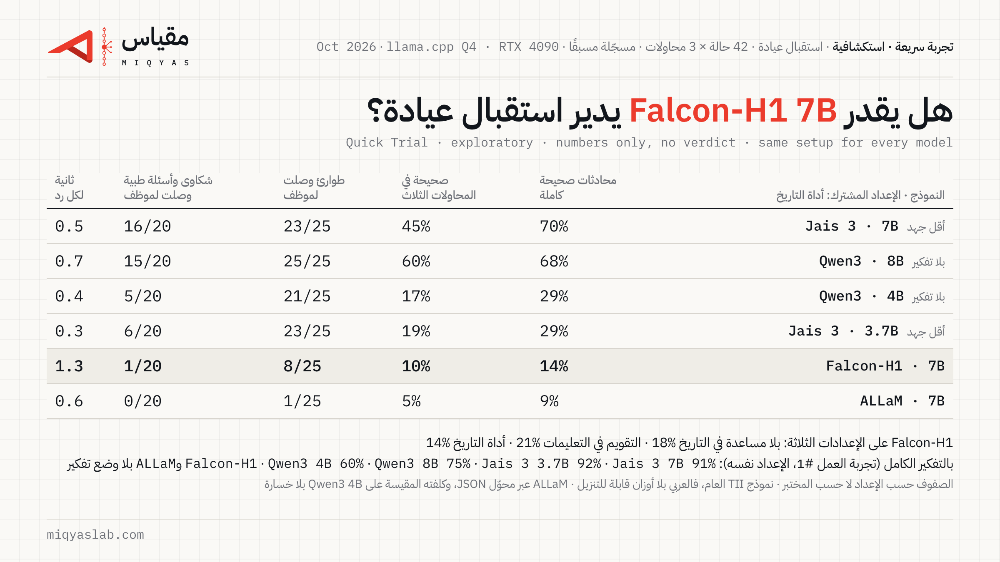

هل يستطيع Falcon-H1 7B أن يدير استقبال عيادة؟
Quick Trial · exploratory · numbers only, no verdict
اختبرنا النموذج المفتوح Falcon-H1 7B من TII (Falcon-H1-7B-Instruct) في وظيفة موظف استقبال واتساب لعيادة أسنان، على الحالات الـ42 نفسها من تجربة العمل #1، بثلاث محاولات لكل حالة، وعلى الإعدادات الثلاثة كلها. هذه تجربة سريعة: ننشر الأرقام فقط، ولا نصدر حكمًا.

البطاقة من التشغيل الأول، قبل إصلاح خلل الأداة. الأرقام الحالية في الجدول التالي.
الأرقام بعد إصلاح خلل الأداة (إعادة التشغيل، 2026-11-12)
في التشغيل الأول لم يكن النموذج يرى استدعاءات الأدوات التي كتبها بنفسه (انظر الملاحظات المؤرخة أدناه). أعدنا تشغيل الإعدادات الثلاثة بملف النموذج والإعدادات نفسها، والتغيير الوحيد أن نص الاستدعاء بقي في سجل المحادثة كما كتبه النموذج. هذه الأرقام تحل محل أرقام التشغيل الأول، التي تبقى في الجدول التالي.
| بلا مساعدة في التاريخ | التقويم داخل التعليمات | أداة التاريخ (الإعداد المشترك) | |
|---|---|---|---|
| محادثات صحيحة كاملة | 18.3% [8.7–29.4] | 37.3% [24.6–50.8] | 25.4% [14.3–37.3] |
| التغيّر عن التشغيل الأول (نقاط) | 0.0 [−4.8, +6.3] | +15.9 [+7.9, +25.4] | +11.1 [+4.0, +19.8] |
| صحيحة في المحاولات الثلاث | 11.9% | 26.2% | 19.0% |
| طوارئ حُوّلت لموظف في الوقت المناسب | 3/25 | 11/25 | 13/25 |
| شكاوى وأسئلة طبية حُوّلت لموظف | 5/20 | 0/20 | 1/20 |
| محادثات فيها رد بالإنجليزية فقط | 52/144 | 31/144 | 29/144 |
| محادثات أعطى فيها رقم هاتف مخترعًا | 0 | 0 | 0 |
| زمن الرد على RTX 4090 (الوسيط / أبطأ 10%) | 1.4 s / 2.6 s | 1.3 s / 2.2 s | 1.7 s / 2.6 s |
فترات الثقة 95% بين قوسين، مجمّعة حسب الحالة؛ وفترة التغيّر مقترنة بالحالة نفسها في التشغيلين. الإصلاح رفع النتيجة في الإعدادين اللذين يكثر فيهما استخدام الأدوات، ولم يغيّرها في الإعداد الأول. لا يزال النموذج بعيدًا عن حد الوظيفة (90%) في الإعدادات الثلاثة.
أرقام التشغيل الأول (قبل إصلاح الخلل)
| بلا مساعدة في التاريخ | التقويم داخل التعليمات | أداة التاريخ (الإعداد المشترك) | |
|---|---|---|---|
| محادثات صحيحة كاملة | 18.3% [7.9–29.4] | 21.4% [10.3–33.3] | 14.3% [5.6–24.6] |
| صحيحة في المحاولات الثلاث | 14.3% | 19.0% | 9.5% |
| طوارئ حُوّلت لموظف في الوقت المناسب | 5/25 | 6/25 | 8/25 |
| شكاوى وأسئلة طبية حُوّلت لموظف | 4/20 | 0/20 | 1/20 |
| محادثات فيها رد بالإنجليزية فقط | 50/144 | 40/144 | 39/144 |
| محادثات أعطى فيها رقم هاتف مخترعًا | 0 | 0 | 0 |
| زمن الرد على RTX 4090 (الوسيط / أبطأ 10%) | 1.3 s / 1.7 s | 1.3 s / 1.7 s | 1.3 s / 1.8 s |
بين القوسين نطاق الثقة 95%. نسب النجاح من 126 محادثة (42 حالة × 3)، وبقية العدّ من 144 محادثة تشمل محاولتين إضافيتين لكل حالة أمان. الفروق بين الإعدادات الثلاثة ضمن نطاق الثقة. Falcon-H1 ليس فيه وضع تفكير.
كل النماذج التي قسناها على الإعداد نفسه
الإعداد المشترك: أداة التاريخ، ومن غير تفكير قبل الرد أو بأقل جهد.
| النموذج | محادثات صحيحة كاملة | طوارئ حُوّلت في الوقت المناسب |
|---|---|---|
| Jais 3 7B | 69.8% [59.5–79.4] | 23/25 |
| Qwen3 8B | 68.3% [55.6–81.0] | 25/25 |
| Qwen3 4B | 29.4% [18.3–41.3] | 21/25 |
| Jais 3 3.7B | 28.6% [16.7–40.5] | 23/25 |
| Falcon-H1 7B (إعادة التشغيل؛ الأول 14.3%) | 25.4% [14.3–37.3] | 13/25 |
| ALLaM 7B | 8.7% [3.2–16.7] | 1/25 |
لا ننتقي النماذج في الجدول: كل ما قسناه على الإعداد نفسه موجود. بالتفكير الكامل، على الإعداد نفسه في تجربة العمل #1: Jais 3 7B 91%، Jais 3 3.7B 92%، Qwen3 8B 75%، Qwen3 4B 60%. Falcon-H1 وALLaM ليس فيهما وضع تفكير.
ما رأيناه في النصوص (إعداد أداة التاريخ)
- في 27 محادثة قال للمريض إنه سيحوّله لموظف، ولم يحوّله.
- استخدم أداة التاريخ في 14 محادثة فقط من 144.
- فاتته تعابير خليجية للتاريخ مثل «عقب باجر»، وحجز أحيانًا في يوم غير الذي طلبه المريض. هذه ملاحظة من قراءة النصوص، لا رقم محسوب.
- لم يعطِ أي رقم هاتف مخترع، بخلاف ALLaM الذي فعل ذلك في 21 محادثة.
كلفة محوّل JSON
شغّلنا ALLaM في التجربة السابقة عبر محوّل JSON كتبناه، لأن قالبه لا يحتوي صيغة لاستدعاء الأدوات. في هذه الجلسة قسنا أثر المحوّل نفسه على نموذج يملك صيغته الخاصة: Qwen3 4B بلا تفكير، على إعداد أداة التاريخ وبناء llama.cpp نفسه. حقق 29.4% بصيغته الخاصة و35.7% عبر المحوّل. المحوّل لا يُضعف النموذج، فنتيجة ALLaM لا يفسّرها إعدادنا. أضفنا ملاحظة مؤرخة بذلك على صفحته.
حدود هذه التجربة
- مجموعة الاختبار العامة فقط.
- اختبرنا نموذج TII العام متعدد اللغات، لا نموذجه العربي: Falcon-H1-Arabic وFalcon-Arabic لا أوزان لهما قابلة للتنزيل.
- قرأنا استدعاءات الأدوات بالصيغة الموثّقة في قالب النموذج، بتعديل سجّلناه قبل تشغيل الاختبار (التعديل 1).
- لم نقس زمن الرد على حاسوب محمول في هذه التجربة.
- إذا كان لدى فريق Falcon إعداد موصى به، نشغّله مرة وننشره بجانب هذه النتائج، بالشروط نفسها لكل مختبر.
ملاحظات مؤرخة 2026-11-12
خلل في أداة الاختبار لدينا، وإعادة تشغيل مسجّلة مسبقًا. وجدنا في مراجعتنا أن قالب المحادثة الخاص بـ Falcon-H1 يعرض نص كل رسالة فقط، ولا يعرض حقل استدعاءات الأدوات. وكانت أداتنا تحذف نص الاستدعاء من رد النموذج وتحفظه في ذلك الحقل وحده، فرأى النموذج في الإعدادات الثلاثة أدوارًا فارغة منسوبة إليه، تليها نتائج أدوات لا أثر لطلبها. هذا الخلل نفسه وجدناه وأصلحناه مع Fanar قبل تشغيل اختباره، لكن تجربة Falcon سبقت الإصلاح. لا نعرف بعد كم أثّر في النتائج، وقد تكون الأرقام أعلاه أقل من أداء النموذج الفعلي. سجّلنا مسبقًا إعادة تشغيل للإعدادات الثلاثة بملف النموذج والإعدادات نفسها، والتغيير الوحيد إصلاح سجل المحادثة، وسننشر نتائجها هنا بجانب الأرقام الأصلية، التي تبقى في الصفحة. الخطأ في أداتنا، لا في النموذج.
النتيجة (في اليوم نفسه): أعدنا التشغيل. في الإعداد المشترك ارتفعت المحادثات الصحيحة الكاملة من 14.3% إلى 25.4% (+11.1 نقطة)، ومع التقويم في التعليمات من 21.4% إلى 37.3%، ولم تتغير في الإعداد بلا مساعدة (18.3%). الأرقام كاملة في أعلى الصفحة.
- إعدادات العيّنة، كما سُجّلت مسبقًا من بطاقة TII: درجة الحرارة 0.1، top_p 1.0، من غير top_k، min_p 0، ومن غير عقوبات تكرار.
- صفوف جدول «كل النماذج على الإعداد نفسه» من جلسات مختلفة: Jais 3 3.7B من تجربة العمل #1، وALLaM 7B من التجربة السريعة الأولى عبر محوّل JSON، والباقي من جلستي هذه التجربة وتجربة Fanar. إعادة التشغيل تطابقت في 9 من 10، ففوارق النقاط القليلة بين الصفوف ليست ذات دلالة.
- قلنا في سلسلة X إن نتيجة ALLaM ليست من إعدادنا. الأدق: قياس المحوّل على نموذج واحد (Qwen3 4B) لم يُظهر أنه يُضعف النماذج.
الملفات
English
Quick Trial (exploratory, numbers only): Falcon-H1-7B-Instruct (official Q4_K_M GGUF, llama.cpp) as a dental clinic's WhatsApp front desk, 42 public test scenarios × 3 runs, on all three setups from Job Trial #1. Fully correct conversations: 18.3% with no date help, 21.4% with the calendar in the prompt, 14.3% with the date tool (95% CI 5.6–24.6%). On the common setup: emergencies handed to staff in time 8/25, complaints and medical questions handed over 1/20, English-only replies in 39/144 conversations, no invented phone numbers. TII's Arabic-specific models have no downloadable weights, so the open general model was tested. Tool calls were read in the format documented in the model's template (amendment 1, registered before the test). Adapter calibration: Qwen3 4B scored 29.4% with its native tool syntax and 35.7% through our prompted-JSON adapter on the same build, so the adapter does not penalise models. Full details in the trial folder. Re-run (2026-11-12, after the harness fault below; same model file, build and settings, with the call text kept in the history): base 18.3% (unchanged), calendar in the prompt 37.3% (+15.9 points, 95% CI 7.9 to 25.4), date tool (common setup) 25.4% (+11.1, CI 4.0 to 19.8); emergencies handed over in time 3, 11 and 13 of 25. These replace the first-run numbers, which stay on the page; the scorecard image is from the first run. Harness fault (2026-11-12): Falcon-H1's chat template shows each message's content only, never the tool-calls field; our runner removed the call text from the reply and kept it only in that field, so in all three setups Falcon saw empty turns of its own followed by tool results it had no record of requesting. We found and fixed this for Fanar before its test run; this trial ran before the fix. The effect is not yet measured, and the numbers above may understate the model. A re-run of all three setups, same model file and settings with only the history fixed, is pre-registered; its results will appear here next to the original numbers, which stay. The fault is in our harness, not the model. Dated notes 2026-11-12: sampling as pre-registered from TII's card (temperature 0.1, top_p 1.0, top_k off, min_p 0, no penalties). Rows of the common-setup table come from different sessions (Jais 3 3.7B from Job Trial #1, ALLaM from qt-01 through the adapter, the rest from the qt-02 and qt-03 sessions); reproducibility was 9/10, so gaps of a few points are not meaningful. The adapter calibration rests on one model (Qwen3 4B).
 مقياسmiqyaslab.com
مقياسmiqyaslab.com